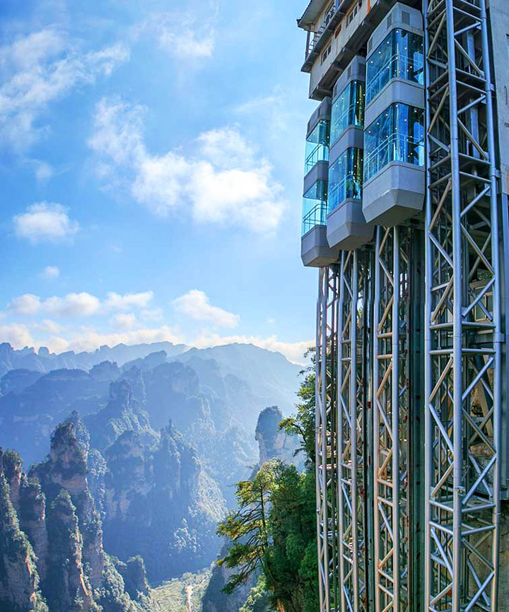

We have different paths that the drones can fly to. Paths are important incase you need to take shortcut or navigate faster depending on your convenience. These pathe are run through the various tunnels. To learn more about these tunnels visit the Tunnels page. Navigating these paths can be done easily though the drones. The zipline hooks onto the place you are going to through a drone. That drone will fly beside your cube showing the map and different pathways that are the fastest to take to reach the destination. You can select a pathway you want for quick detours and the drone will send you back on the right path after you're done.
These cubicles are made confortable to ensure and peaceful flight. They will have your drones hovering beside so you can easily navigate where is it you need to reach or maneuver the path yourself. The cubicles also has wifi and can use internet. It provides a smoother journey and keeps you company throughout the flight, something that an airplane wouldn't provide. We have also added air conditioning to each indivitual cube.
